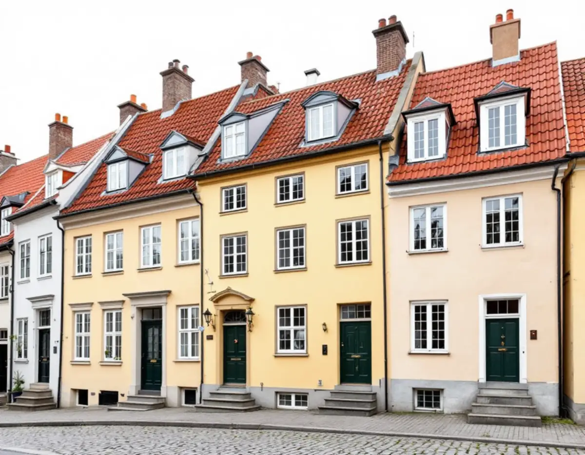
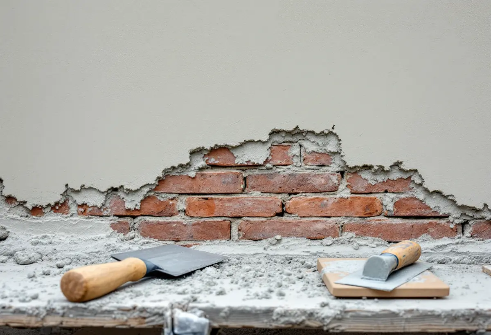
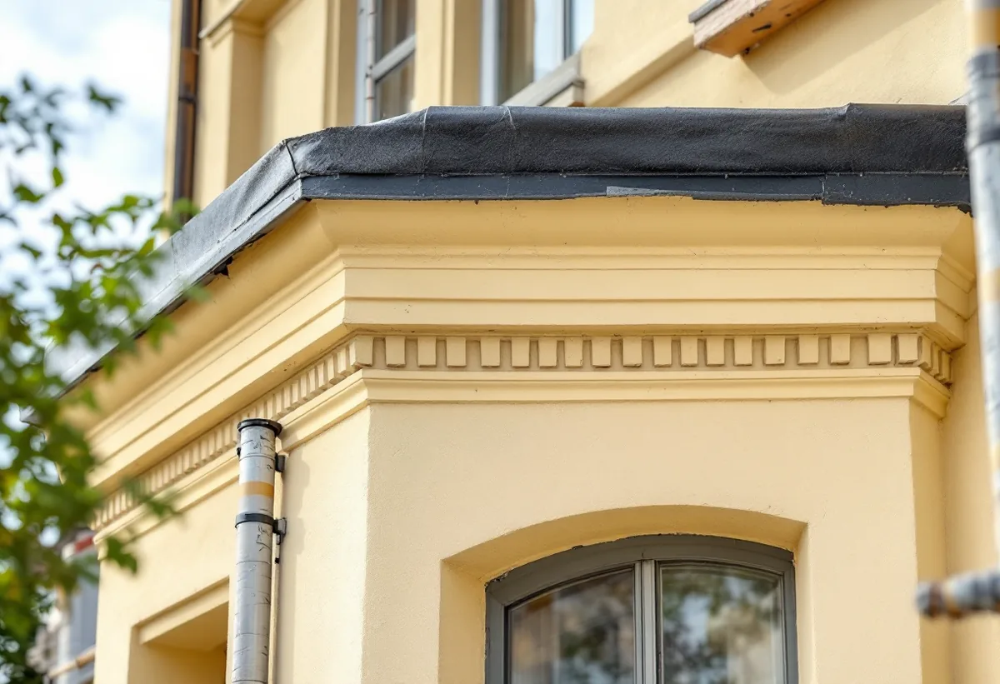

Genomgång med styrelsen
Vi går runt huset, knackar på putsen och noterar sprickor, bom och gamla lagningar.
Många av Södermalms stenhus putsades när kalkbruk ännu var det vanliga. Lagas putsen med fel bruk kan skadan bli större än den var. Geal Entreprenad AB renoverar putsfasader på Södermalm åt bostadsrättsföreningar och fastighetsägare – vi tar reda på vilket bruk som sitter på väggen innan något knackas ner.

Stadens översiktsplan beskriver bebyggelsen vid Östra Mariaberget som ett enastående exempel på 1700-talets medvetna stadsbyggande. Husen kom till efter en stor brand 1759 och uppfördes i två till tre våningar med väl proportionerade, slätputsade fasader i ljusa gula toner. Taken var brutna och lades med tegel. Under 1800-talets andra hälft byggdes många av husen om, och en del – särskilt mot Hornsgatan – fick påbyggnader. Planen kallar området en ovanligt sammanhållen bild av hur Stockholm byggdes på 1700-talet.
På andra delar av Södermalm tar nästa husgeneration vid. Enligt översiktsplanen breder den klassiska stenstaden från 1870–1930 ut sig även över Södermalm, med hyreshus som normalt är fem våningar höga och har tidstypiska, dekorerade fasader i puts eller natursten. För fasadarbetet betyder det att två grannhus kan ha byggts med helt olika bruk, och att en lagningsmetod som fungerar på det ena inte självklart passar det andra.

Länsstyrelsernas informationsblad om puts på mur och trä förklarar varför bruket spelar så stor roll. En kalkputs är relativt mjuk och svag och kan därför ta upp en del rörelser i underlaget utan att spricka eller lossna – vilket enligt bladet paradoxalt nog gör den hållbarare än en hårdare puts. Fram till mitten av 1900-talet användes nästan bara rent kalkbruk. Byts en del av kalken mot cement blir putsen hårdare, mindre elastisk och tätare mot fukttransport, och därför uppstår ofta problem när ett kalkputsat hus lagas med cementhaltigt bruk. Bladets råd är tydligt: kalkputs ska lagas med kalkbruk, annars får den gamla putsen och lagningen olika egenskaper.
Skadorna sitter enligt bladet ofta där fasaden har fått ta emot vatten – vid läckande stuprör, under fönster och vid grunden. Sprickor beror på sättningar och rörelser i väggen eller grunden, medan putsbortfall hänger ihop med vatten och fukt: fuktig puts som inte hinner torka fryser sönder och lossnar. Även en för tät färg, till exempel plastfärg, kan skada eftersom fukten inifrån inte kommer ut. Bladet uppmanar den som ska putsa om att först titta noga på fasaden och fundera över orsakerna, och det är där vi börjar: vi letar upp varifrån vattnet kommer innan vi lagar det som vattnet har förstört.
Är huset målat med kalkfärg ska man enligt Länsstyrelsernas blad fortsätta med det vid ommålning. Traditionell kalkfärg blandas av våtsläckt kalkpasta, vatten och pigment och behöver fyra till sex strykningar för full täckning, men den blir transparent och får en vacker lyster. Innehåller putsen cement går vanlig kalkfärg inte att använda; då kan en tjockare kalkfärg med ballast av krossad dolomit strykas, och den täcker på två strykningar. Kalkfärger med tillsats av plast bör enligt bladet undvikas. Putsade lister täcks ofta av plåt, och bladet visar hur en plåtlist med traditionell utformning blir mindre iögonfallande än en av modern typ.
Innan arbetet beställs behöver styrelsen veta vad som gäller för huset. Är det markerat med blått eller grönt i Stadsmuseets klassificeringskarta, eller ligger det inom ett riksintresse, krävs enligt Stockholms stad bygglov även för åtgärder som annars är lovfria. I vissa detaljplaner gäller utökad lovplikt för till exempel underhållsåtgärder, och inför arbetet kan det behövas en antikvarisk förundersökning. Plan- och bygglagen kräver dessutom att ett byggnadsverk underhålls så att utformningen i huvudsak bevaras – och på ett särskilt värdefullt hus så att de särskilda värdena bevaras. Om fönstren i samma fasad, se fönsterrenovering på Södermalm, och om målning inomhus målare på Södermalm.

Vi går runt huset, knackar på putsen och noterar sprickor, bom och gamla lagningar.
Ett prov av putsen och färgen visar om fasaden är kalkputsad eller innehåller cement.
Vi kontrollerar Stadsmuseets karta och detaljplanen innan något beställs.
Lagning, omputsning, plåt och avfärgning redovisas var för sig.
Lös puts knackas ner, underlaget rensas och nytt bruk av samma slag läggs i skikt.
Fasaden avfärgas med en färg som passar putsen, och listernas plåt läggs om.
I ett flerbostadshus är det föreningen eller fastighetsägaren som beställer fasadarbetet. För en bostadsrättshavare räknar Skatteverket fasader till de gemensamma ytorna, och arbete där ger inget rotavdrag – inte heller att montera en byggnadsställning på utsidan av bostaden. I stadsdelen Mariatorget finns enligt stadens områdesfakta 2025 8 701 bostäder, varav 5 027 bostadsrätter, och bara 35 bostäder i småhus. Inget av småhusen där är en äganderätt.
Äger du ett småhus räknas att byta, mura, reparera och måla fasader som rotarbete, liksom ställning i samband med arbetet. Avdraget är högst 30 procent av arbetskostnaden, som mest 50 000 kr per person och år och 75 000 kr tillsammans med rutavdrag. Material och resor ger inget avdrag. Vi drar avdraget direkt på fakturan.
Fasadens yta och höjd, hur stor del av putsen som har släppt, om tidigare cementlagningar måste tas bort, antalet strykningar kalkfärgen kräver och hur mycket plåt som ska läggas om styr kostnaden. Efter ett gratis platsbesök får styrelsen ett skriftligt kostnadsförslag med varje moment för sig.
Puts, panel och tilläggsisolering.
Fasadrenovering i Stockholm →Takbyte, takbesiktning och plåtarbeten.
Takläggare på Södermalm →Stenstad, storgårdskvarter och bergen.
Takrenovering på Södermalm →Vattenskador, ansvar och husens olika åldrar.
Badrumsrenovering på Södermalm →Inreda vinden till bostäder.
Byggföretag på Södermalm →Putsen mot gatan.
Fasadmålning på Södermalm →Föreningar, gatufasad och gårdsfasad.
Fönsterbyte på Södermalm →Föreningens fönster, besiktigade före beslut.
Fönsterrenovering på Södermalm →Renovera, riva och sortera golvet.
Golvläggare på Södermalm →Slipa golven i den nyköpta lägenheten.
Golvslipning på Södermalm →Kokvrå, gasspis och kulturvärden i lägenheten.
Köksrenovering på Södermalm →Äldre färglager, bättring och provytor.
Målare på Södermalm →Takkupor, vindar och äldre tak.
Plåtslagare på Södermalm →Väggar, dörrar och förvaring i lägenhet.
Snickare på Södermalm →Nytt tak på föreningens eller hyresvärdens hus.
Takbyte på Södermalm →Ny tapet och gamla tapetlager.
Tapetsering på Södermalm →Lägenheten i takt med stambytet.
Totalrenovering på Södermalm →